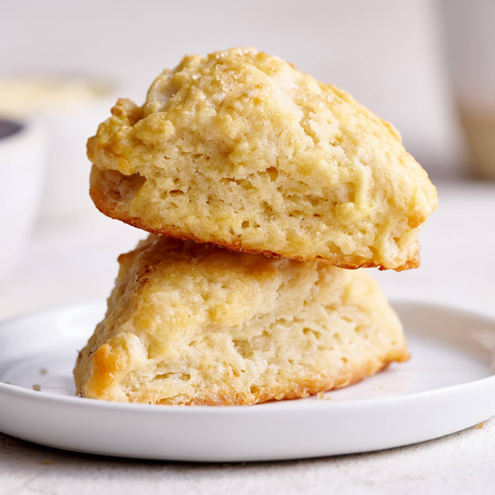

Lemonade Scones
These beautiful scones with a bit of butter tastes really nice!
Ingredients
- 3 and a half cups of self raising flour
- 1 cup of cream
- 1 cup of lemonade or sprite
- Half a teaspoon of salt
Steps
- Mix together in a bowl
- Line baking tray with baking paper
- Shape scone mix into even oblong aproximately 3/4's of an inch thick
- Cut in to portions with knife
- Bake until golden brown at 220 celcius